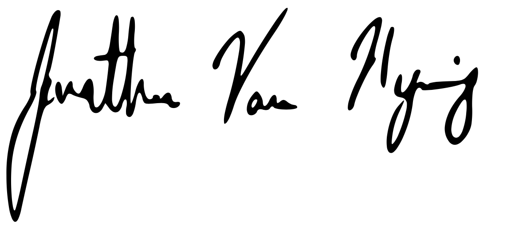

Dear Hiring Manager,
I am writing to express my interest in the New Graduate Rotation Program – Guidance, Navigation & Control at Blue Origin. With a master’s degree in Controls and Mechatronics Engineering and a bachelor’s degree in Aerospace Engineering from UC San Diego, I have a strong base in engineering fundamentals across disciplines. In addition, I have multiple years of hands experience working individually and on teams, developing both mechanical and electrical systems, and managing large projects. Outside of engineering, I am an avid hiker, skier, and sailor who has a deep appreciation for the Pacific Northwest and would be delighted to relocate. I am excited to present my application for this position as I feel it’s a perfect match for my experience and aspirations
From my work experience, I have demonstrated my technical skill and strong leadership ability. I was the Director of Engineering and Chief Safety Officer for SEDS at UCSD, a multi-project liquid rocketry team with over 100 members and $100k in NCRF funding. I received hands-on training in manual and CNC machining and metrology equipment from faculty and staff. I then designed a four-day onboarding program to teach manufacturing principles and safety to new club members. Similarly, while working for COSMOS as a co-instructor, I taught high school students the principles of robotics engineering, including how to operate manufacturing equipment (CAD, laser cutting, 3D printing), developed curriculums on computer vision in Python, and oversaw student-led projects.
My master’s course work has prepared me with in-depth theoretical knowledge of linear and non-linear control, optimal estimation, motion planning techniques based in screw theory, robot decision making, and reinforcement learning. Through my research projects I have been able to apply this theoretical knowledge. In the Haptic Helmet project, I developed a prototype helmet that delivers navigation instructions through vibrotactile feedback. This experience honed my skills in C++ and C# programming and deepened my understanding AHRS, Kalman, Mahoney, and Madgewick Filtering. For the Autonomous Vertical Lander project, I developed a thrust vector control system for an electric drone and designed and manufactured test equipment to verify state estimates and controller performance. This experience solidified my understanding Linux systems and allowed me to build confidence with using MATLAB and Simulink for simulation and control design.
I love solving difficult problems. This position would afford me the opportunity to put my engineering knowledge up against some of the most difficult unsolved problems in the world and make contributions for the betterment of humanity and the preservation of earth. I am eager to learn more details about the position and demonstrate my abilities.
I am eager to learn more details about the position and demonstrate my abilities. Thank you for your consideration.
Jonathan Van Hyning
